BUG model: concurrent loads and UQ¤
Load modules¤
Imports¤
import pdb
import datetime
import os
import shutil
REMOVE_RESULTS = False
# for root, dirs, files in os.walk('/path/to/folder'):
# for f in files:
# os.unlink(os.path.join(root, f))
# for d in dirs:
# shutil.rmtree(os.path.join(root, d))
#
if os.getcwd().split('/')[-1] != 'results':
if not os.path.isdir("./figs"):
os.mkdir("./figs")
if REMOVE_RESULTS:
if os.path.isdir("./results"):
shutil.rmtree("./results")
if not os.path.isdir("./results"):
print("***** creating results folder ******")
os.mkdir("./results")
os.chdir("./results")
import pathlib
import matplotlib.pyplot as plt
import plotly.express as px
import plotly.graph_objects as go
from plotly.subplots import make_subplots
import pickle
import jax.numpy as jnp
import pandas as pd
import numpy as np
import feniax.plotools.uplotly as uplotly
import feniax.preprocessor.solution as solution
import feniax.preprocessor.configuration as configuration
from tabulate import tabulate
Helper functions¤
-
Common functions
scale_quality = 6 print(f"Format for figures: {figfmt}") print(f"Image quality: {scale_quality}") def fig_out(name, figformat=figfmt, update_layout=None): def inner_decorator(func): def inner(*args, **kwargs): fig = func(*args, **kwargs) if update_layout is not None: fig.update_layout(**update_layout) fig.show() figname = f"figs/{name}.{figformat}" fig.write_image(f"../{figname}", scale=scale_quality) return fig, figname return inner return inner_decorator def fig_background(func): def inner(*args, **kwargs): fig = func(*args, **kwargs) # if fig.data[0].showlegend is None: # showlegend = True # else: # showlegend = fig.data[0].showlegend fig.update_xaxes( #titlefont=dict(size=20), tickfont = dict(size=20), mirror=True, ticks='outside', showline=True, linecolor='black', #zeroline=True, #zerolinewidth=2, #zerolinecolor='LightPink', gridcolor='lightgrey') fig.update_yaxes(tickfont = dict(size=20), #titlefont=dict(size=20), zeroline=True, mirror=True, ticks='outside', showline=True, linecolor='black', gridcolor='lightgrey') fig.update_layout(plot_bgcolor='white', yaxis=dict(zerolinecolor='lightgrey'), font=dict( family="Arial", size=18, color="black" ), #showlegend=True, #showlegend, margin=dict( autoexpand=True, l=0, r=0, t=2, b=0 )) return fig return inner # fig.update_layout( # xaxis=dict( # title='X AxisTitle', # title_font=dict(family='Arial Black', size=22, color='black'), # tickfont=dict(family='Arial', size=18, color='black') # ), # yaxis=dict( # title='Y Axis Title', # title_font=dict(family='Arial Black', size=22, color='black'), # tickfont=dict(family='Arial', size=18, color='black') # ), # font=dict( # family="Arial", # size=18, # color="black" # ), # legend=dict( # font=dict(size=16), # x=0.02, # y=0.98, # bgcolor='rgba(255,255,255,0)', # transparent background # bordercolor='black', # borderwidth=1 # ), # margin=dict(l=80, r=40, t=40, b=80), # width=700, # height=500 # ) -
Plot functions
@fig_background def plot_wingmeanstd(x, y, ystd): fig = make_subplots( rows=2, cols=2, specs=[[{}, {"rowspan": 2}], # Row 1: col1 has plot, col2 is Plot C spanning 2 rows [{} , None]], # Row 2: col1 has plot, col2 empty due to rowspan #subplot_titles=("Plot A", "Plot C", "Plot B") # Adjust titles as needed ) fig1 = ( go.Scatter( name=r'$\mu_u$', x=x, y=y[0], mode='lines', line=dict(color='rgb(31, 119, 180)'), ), go.Scatter( #name=r'$\pm 1 \sigma$', x=x, y=y[0]+ystd[0], mode='lines', marker=dict(color="#444"), line=dict(width=0), showlegend=False ), go.Scatter( name=r'$\pm 1 \sigma_u$', x=x, y=y[0]-ystd[0], marker=dict(color="#444"), line=dict(width=0), mode='lines', fillcolor='rgba(68, 68, 68, 0.3)', fill='tonexty', #showlegend=False ) ) fig2 = ( go.Scatter( #name=r'$\mu_u$', x=x, y=y[1], mode='lines', line=dict(color='rgb(31, 119, 180)'), showlegend=False ), go.Scatter( #name=r'$\pm 1 \sigma$', x=x, y=y[1]+ystd[1], mode='lines', marker=dict(color="#444"), line=dict(width=0), showlegend=False ), go.Scatter( #name=r'$\pm 1 \sigma_u$', x=x, y=y[1]-ystd[1], marker=dict(color="#444"), line=dict(width=0), mode='lines', fillcolor='rgba(68, 68, 68, 0.3)', fill='tonexty', showlegend=False ) ) fig3 = ( go.Scatter( #name=r'$\mu_u$', x=x, y=y[2], mode='lines', line=dict(color='rgb(31, 119, 180)'), showlegend=False ), go.Scatter( #name=r'$\pm 1 \sigma$', x=x, y=y[2]+ystd[2], mode='lines', marker=dict(color="#444"), line=dict(width=0), showlegend=False ), go.Scatter( #name=r'$\pm 1 \sigma_u$', x=x, y=y[2]-ystd[2], marker=dict(color="#444"), line=dict(width=0), mode='lines', fillcolor='rgba(68, 68, 68, 0.3)', fill='tonexty', showlegend=False ) ) # Plot A (bottom-left) for fi in fig1: fig.add_trace( fi, row=1, col=1 ) # Plot B (bottom-left) for fi in fig2: fig.add_trace( fi, row=2, col=1 ) # Plot C (bottom-left) for fi in fig3: fig.add_trace( fi, row=1, col=2 ) #fig.update_xaxes(title_text="Wing span", row=1, col=1) fig.update_yaxes(title_text=r"$ \large u_x \; [m]$", row=1, col=1) fig.update_xaxes(title_text="Wing span", row=2, col=1) fig.update_yaxes(title_text="$ \large u_y \; [m]$", row=2, col=1) fig.update_xaxes(title_text="Wing span", row=1, col=2) fig.update_yaxes(title_text="$ \large u_z \; [m]$", row=1, col=2) fig.update_layout( legend=dict(x=0.8, y=0.95), # xaxis_title="Wing span [m]", # yaxis_title='Wing vertical displacement [m]', showlegend=True) return fig @fig_background def plot_jacpdiff(x, yobj, yjac): fig = None fig = uplotly.lines2d(x, yobj, fig, dict(name="Objective", line=dict(color="black"), marker=dict(symbol="circle") ), dict()) fig = uplotly.lines2d(x, yjac, fig, dict(name="Jacobian", line=dict(color="blue"), marker=dict(symbol="square") ), dict()) powersx = [1, 2, 3] powersy = [-3, -2, -1] tickvalsx = [10 ** p for p in powersx] tickvalsy = [10 ** p for p in powersy] fig.update_xaxes(type="log", #tickformat= '.0e', #showexponent = 'first', #tickvals=tickvalsx, #ticktext=[f"10^{p}" for p in powersx], exponentformat = 'power' ) fig.update_yaxes(type="log", #tickformat= '.0e' #tickvals=tickvalsy, #showgrid=True, # Keep all grid lines #minor=dict( # showgrid=True # THIS enables minor grid lines #), #ticktext=[f"10^{p}" for p in powersy], exponentformat = 'power' ) fig.update_layout( legend=dict(x=0.7, y=0.95), xaxis_title="Number of paths", yaxis_title='Relative Error', showlegend=True) return fig @fig_background def plot_jacediff(x, yjac): fig = None fig = uplotly.lines2d(x, yjac, fig, dict(#name="Jacobian", line=dict(color="blue"), marker=dict(symbol="square") ), dict()) fig.update_xaxes(type="log", #tickformat= '.0e' exponentformat = 'power' ) fig.update_yaxes(type="log", #tickformat= '.0e' exponentformat = 'power' ) fig.update_layout(xaxis_title=r'$\text{Finite-Differences } \Large \epsilon$', yaxis_title="Relative Error") #fig.update_layout(xaxis_type="log", yaxis_type="log") return fig def plot_jacpdiff2(name, x, yobj, yjac, figformat=figfmt): # Create figure and axes fig, ax = plt.subplots(figsize=(4.5, 4.5)) # width=8 inches, height=6 inches # Plot the data ax.plot(x, yobj, label='Objective', marker='o', # Circle markers color='black') ax.plot(x, yjac, label='Jacobian', marker='s', color='blue') # Set logarithmic scale ax.set_xscale('log') # Set x-axis to log scale ax.set_yscale('log') # Optional, y-axis remains linear ax.tick_params(axis='both', which='major', labelsize=12) # Add labels and title ax.set_xlabel('Number of paths', fontsize=12) ax.set_ylabel("Relative error", fontsize=12) # Add grid and legend ax.grid(True, which='both', linestyle='-', linewidth=0.5) ax.legend(fontsize=12) # Automatically adjust layout to prevent clipping plt.tight_layout() figname = f"figs/{name}.{figformat}" plt.savefig(f"../{figname}", dpi=300) return ax, figname def plot_jacediff2(name, x, yjac, figformat=figfmt): # Create figure and axes fig, ax = plt.subplots(figsize=(4.5, 4.5)) # width=8 inches, height=6 inches # Plot the data ax.plot(x, yjac, marker='o', # Circle markers #label='y = log10(x)', color='blue') # Set logarithmic scale ax.set_xscale('log') # Set x-axis to log scale ax.set_yscale('log') # Optional, y-axis remains linear ax.tick_params(axis='both', which='major', labelsize=12) # Add labels and title ax.set_xlabel(r'$\text{Finite-Differences } \epsilon$', fontsize=12) ax.set_ylabel("Relative Error", fontsize=12) # Add grid and legend ax.grid(True, which='both', linestyle='-', linewidth=0.5) #ax.legend() # Automatically adjust layout to prevent clipping plt.tight_layout() figname = f"figs/{name}.{figformat}" # Save plot to file plt.savefig(f"../{figname}", dpi=300) return ax, figname @fig_background def plot_jacfemold(jac, xindex, yindex, xlabel="", ylabel=""): fig = go.Figure(data=go.Heatmap( z=jac[xindex[:,None], yindex], colorscale = 'hot')) xaxis = dict( tickmode = 'array', tickvals = jnp.arange(len(xindex)), ticktext = xindex ) yaxis = dict( tickmode = 'array', tickvals = jnp.arange(len(yindex)), ticktext = yindex ) fig.update_layout(xaxis=xaxis, yaxis=yaxis, xaxis_title=xlabel, yaxis_title=ylabel) #fig.update_layout(xaxis_type="log", yaxis_type="log") return fig @fig_background def plot_jacfem(jac, jac2=None, xlabel="i", ylabel="j", zlabel=""): # fig = go.Figure(data=go.Heatmap( # z=jac, colorscale = 'hot')) fig = go.Figure(data=[ go.Surface(z=jac, colorscale='reds'), #go.Surface(z=jac2, showscale=False, opacity=0.9, colorscale='reds'), #go.Surface(z=jac-1, showscale=False, opacity=0.9) ]) fig.update_layout(xaxis_title=xlabel, yaxis_title=ylabel, #zaxis_title="dd" scene = dict( xaxis_title=xlabel, yaxis_title=ylabel, zaxis_title=zlabel, xaxis = dict( backgroundcolor="rgba(0, 0, 0,0)", gridcolor="black", showbackground=True, zerolinecolor="black",), yaxis = dict( backgroundcolor="rgba(0, 0, 0,0)", gridcolor="black", showbackground=True, zerolinecolor="black"), zaxis = dict( backgroundcolor="rgba(0, 0, 0,0)", gridcolor="black", showbackground=True, zerolinecolor="black",), ), ) #fig.update_layout(xaxis_type="log", yaxis_type="log") return fig @fig_background def plot_manoeuvretip(aoa, ua, ua_lin): fig=None colors = ["steelblue", "black"] dashes = ["solid", "dash"] fig = uplotly.lines2d(aoa, ua, fig, dict(name=f"Nonlinear", line=dict(color=colors[0], dash=dashes[0]) )) fig = uplotly.lines2d(aoa, ua_lin, fig, dict(name=f"Linear", line=dict(color=colors[1], dash=dashes[1]) )) fig.update_yaxes(title=r'$\large \hat{u}_z [\%]$') fig.update_xaxes(#range=aoa, title=r'$AoA [^o]$') return fig @fig_background def plot_gustshard(x, y, z, component): fig = go.Figure(data = go.Contour( z= z[:,:, component], x=x, # horizontal axis y=y, # vertical axis colorscale='Blues', colorbar=dict( tickfont=dict(size=20) ) # Set tick font size ) ) fig.update_yaxes(title="Gust length [m]") fig.update_xaxes(title="Gust intensity [m/s]") return fig @fig_background def plot_jacfem2(z, xlabel=None, ylabel=None): fig = go.Figure(data = go.Contour( z= z, #x=x, # horizontal axis #y=y, # vertical axis colorscale='blues', colorbar=dict( tickfont=dict(size=20) ) # Set tick font size ) ) fig.update_yaxes(title=ylabel) fig.update_xaxes(title=xlabel) return fig
Models¤
For a complete walk-through of model and creation see the file modelgeneration.org
Montecarlo UQ¤
- Discrete loading field along wings with uncertainty component (Gaussian)
- Python file: settings~DiscreteMC1high~.py, settings~DiscreteMC1MCsmall~.py, settings~DiscreteMC1vsmall~.py
- Results presented in Sec. 1.3.1
Derivative of expectations¤
- Compute derivatives of the expectations previously computed concurrently via Montecarlo simulations.
- Python file: settings~ADDiscreteMC1t~.py, settings~ADDiscreteMC1tfdjac~.py, settings~ADDiscreteMC1fem~.py
- Results presented in Sec. 1.3.2
- Corresponding test: ../../../tests/intrinsic/montecarlo/test_BUGUQ.py
Manoeuvre¤
- Manoeuvre case with clamped AC varying u~inf~ and rho~inf~
- Testing and benchmarking parallelisation
- Python file: settings~manoeuvre1shard~.py for computations
- Results presented in Sec. 1.3.3
- Corresponding test: ../../../tests/intrinsic/aeroelastic_static/test_BUGmanoeuvre.py
Dynamic-load envelopes¤
- Construct gusts of different lengths, intensity and airflow density
- Python file: python settings~gust1shard~.py for plotting (11x11=121 gust) settings~gust1shardbench~.py for benchmark (8x8x8=256 gust)
- Results presented in Sec. 1.3.4
- Corresponding test: ../../../tests/intrinsic/aeroelastic_dynamic/test_BUGgustShard.py
Gust AD forager¤
- Run gusts in parallel and find the worst cases
- Checking AD of free-flying AC for worst case determined by forager
- Python file: settings~gustforager~.py
- Results presented in Sec. 1.3.4.1
- Corresponding test: ../../../tests/intrinsic/aeroelastic_dynamic/test_BUGforager.py
Run¤
#!/usr/bin/env bash
Manoeuvre="tru"
Montecarlo="tru"
MontecarloADt="true"
MontecarloADtjac="true"
MontecarloADtfd="tru"
MontecarloADfem="tru"
Gust="tru"
GustBench="tru"
Forager="tru"
pyenv activate feniax
pathBUG="../../../../FENIAXexamples/BUG/"
current_dir=$(pwd)
cd $pathBUG
if [ "$Manoeuvre" = "true" ]; then
echo "RUNNING MANOEUVRE"
python settings_manoeuvre1shard.py $current_dir
fi
if [ "$Montecarlo" = "true" ]; then
echo "RUNNING MONTECARLO"
python settings_DiscreteMC1high.py $current_dir
python settings_DiscreteMC1small.py $current_dir
python settings_DiscreteMC1vsmall.py $current_dir
fi
if [ "$MontecarloADt" = "true" ]; then
echo "RUNNING MONTECARLOADT"
# python settings_ADDiscreteLoadsMC_validation.py $current_dir
python settings_ADDiscreteMC1_t.py $current_dir
fi
if [ "$MontecarloADtjac" = "true" ]; then
echo "RUNNING MONTECARLOADTJAC"
# python settings_ADDiscreteLoadsMC_validation.py $current_dir
python settings_ADDiscreteMC1_t_fdjac.py $current_dir
fi
if [ "$MontecarloADtfd" = "true" ]; then
echo "RUNNING MONTECARLOADTFD"
# python settings_ADDiscreteLoadsMC_validation.py $current_dir
python settings_ADDiscreteMC1_t_fd.py $current_dir
fi
if [ "$MontecarloADfem" = "true" ]; then
echo "RUNNING MONTECARLOADFEM"
python settings_ADDiscreteMC1_fem.py $current_dir
#python settings_ADDiscreteLoadsMC.py $current_dir
fi
if [ "$Gust" = "true" ]; then
echo "RUNNING GUST"
python settings_gust1shard.py $current_dir
fi
if [ "$GustBench" = "true" ]; then
echo "RUNNING GUST BENCHMARK"
python settings_gust1shardbench.py $current_dir
fi
if [ "$Forager" = "true" ]; then
echo "RUNNING FORAGER"
python settings_gustforager.py $current_dir
fi
Results¤
In this section we show the main strengths of our solvers. We run a
representative aircraft model undergoing very large nonlinear
displacements, the University of Bristol Ultra-Green (BUG) aircraft
model cite:&STODIECK2018 is the chosen platform as
it is not based on proprietary data and it showcases high-aspect ratio
wings and a GFEM based on beam and shell elements in MSC Nastran. The
main components of the aeroelastic model have been presented in
cite:&CEA2025a. Leveraging on modern hardware
architectures and a parallelisation across devices, to unlock problems
such as quantifying the uncertainties in the nonlinear response given a
non-deterministic loading field. We build load envelopes of static and
dynamic aeroelastic simulations and differentiate across the concurrent
simulations to obtain sensitivities of dynamic loads as well as moment
statistics.
Structural and aeroelastic static simulations follow, solved via a
Newton-Raphson solver with tolerance of $10^{-6}$, as well as an
assessment of the aircraft dynamics in response to various gust
profiles. A high modal resolution of 100 modes is employed in all the
results, more than what is necessary for most of the examples.
Calculations are carried out on a CPU Intel Xeon Silver 4108 with
1.80GHz speed, 6 cores and a total 12 threads, as well as on an Nvidia
GPU A100 80GB SXM.
Uncertainty quantification in nonlinear simulations¤
# using jac_ediff2 that was computed in memory instead of loading the result which seems to loose accuracy
READ_CONFIG = False
if 'config_mc1' not in globals():
config_mc1 = configuration.Config.from_file("./DiscreteMC1high/config.yaml")
sol_mc1high = solution.IntrinsicReader("./DiscreteMC1high")
sol_mc1small = solution.IntrinsicReader("./DiscreteMC1small")
sol_mc1vsmall = solution.IntrinsicReader("./DiscreteMC1vsmall")
wing_nodes = list(range(10, 36))
wing_span = config_mc1.fem.X[wing_nodes[0]:wing_nodes[-1], 1]
components = [0, 1, 2]
Utipmean = []
Utipsmallmean = []
Utipvsmallmean = []
Utipstd = []
Utipsmallstd = []
Utipvsmallstd = []
Umean_wing = []
Ustd_wing = []
for component in components:
u_tipmean = np.mean(sol_mc1high.data.staticsystem_s1.ra[:,-1,component,35] - config_mc1.fem.X[35,component])
u_tipstd = np.std(sol_mc1high.data.staticsystem_s1.ra[:,-1,component,35])
u_tipsmallmean = np.mean(sol_mc1small.data.staticsystem_s1.ra[:,-1,component,35] - config_mc1.fem.X[35,component])
u_tipsmallstd = np.std(sol_mc1small.data.staticsystem_s1.ra[:,-1,component,35])
u_tipvsmallmean = np.mean(sol_mc1vsmall.data.staticsystem_s1.ra[:,-1,component,35] - config_mc1.fem.X[35,component])
u_tipvsmallstd = np.std(sol_mc1vsmall.data.staticsystem_s1.ra[:,-1,component,35])
Utipmean.append(u_tipmean)
Utipsmallmean.append(u_tipsmallmean)
Utipvsmallmean.append(u_tipvsmallmean)
Utipstd.append(u_tipstd)
Utipsmallstd.append(u_tipsmallstd)
Utipvsmallstd.append(u_tipvsmallstd)
umean_wing = []
ustd_wing = []
for ni in wing_nodes:
umean_wing.append(np.mean(sol_mc1high.data.staticsystem_s1.ra[:,-1, component, ni] -
config_mc1.fem.X[ni,component]))
ustd_wing.append(np.std(sol_mc1high.data.staticsystem_s1.ra[:,-1, component, ni] -
config_mc1.fem.X[ni,component]))
umean_wing = np.array(umean_wing)
ustd_wing = np.array(ustd_wing)
Umean_wing.append(umean_wing)
Ustd_wing.append(ustd_wing)
In this section uncertainty quantification is performed for both linear
and nonlinear responses to a loading field that is non-deterministic.
Thousands of simulations are employed in Monte Carlo type of analysis to
resolve for the statistics, for which parallelisation of the independent
simulations become critical. The example resembles the workflow of
flight loads and wing stress analysis in an industrial setup. There will
always be an element of uncertainty around computed loads, and what we
show here is how for large displacements, the statistics need to be
computed for every distinct loading. And for this, having a
parallisation strategy as the one presented could potentially allow the
computation of complex correlations and averages via Montecarlo
analysis.
Considering this, a static loading field is prescribed along the wings
consisting of follower forces in the normal (out-of-plane) direction, as
well as torsional moments (to mimic the added aerodynamic forces on an
airfoil), with the characteristic that the force follows a normal
distribution:
\begin{subequations}
$$\begin{align}\label{eq:normal_loading}
N&(\mu=1.5 \times 10^4 \mu_0, \sigma=0.15 \mu) \; \text{[forces]} \\
N&(\mu=3 \times 10^4 \mu_0, \sigma=0.15 \mu) \; \text{[moments]}
\end{align}$$
\end{subequations}
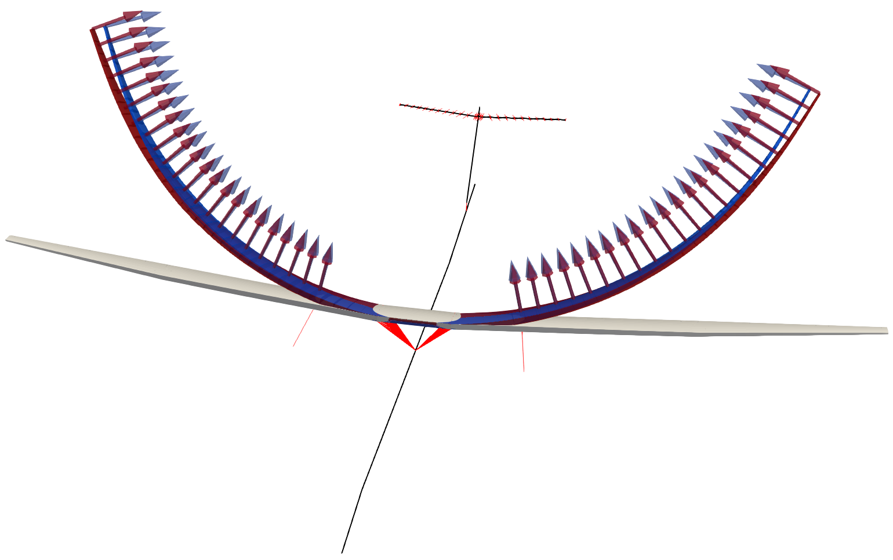
Table 1 shows the normalized statistics gathered from the response, in this case the expectation of tip of the wing displacements in the normal (out-of-plane) direction, $\mu_u $, and the corresponding standard deviation, $ \sigma_u $.
| Case | $\mu_u / \mu_0 $ | $ \sigma_u / \mu_0 $ |
|---|---|---|
| ($\mu_0 = 1$) | 11.57 | 1.35 |
| ($\mu_0 = 0.01$) | 14.8 | 2.4 |
| ($\mu_0 = 0.001$) | 14.9 | 2.3 |
We can see the statistics of the linear response ($\mu_0 = 0.001$) are fully captured by one single Montecarlo analysis, that is, output magnitudes such as equilibrium displacements correlate with the average input load. Whereas in cases with nonlinear deformations ($\mu_0 = 1$), the whole Montecarlo analysis would need to be carried out. This is akin to deterministic linear versus nonlinear analysis. Expanding this data at the tip to the entire right wing, Fig. 2 shows the mean normal displacement along the wing, $\mu_u$, and its standard deviation, $\sigma_u$. Note how despite the standard deviation of the input forces is the same along the wing, the uncertainty in the displacement output grows towards the tip as expected –the aircraft being clamped at the root will only showcase 0 displacements there regardless of the input forces.
fig, figname = fig_out(name)(plot_wingmeanstd)(wing_span, Umean_wing, Ustd_wing)
figname
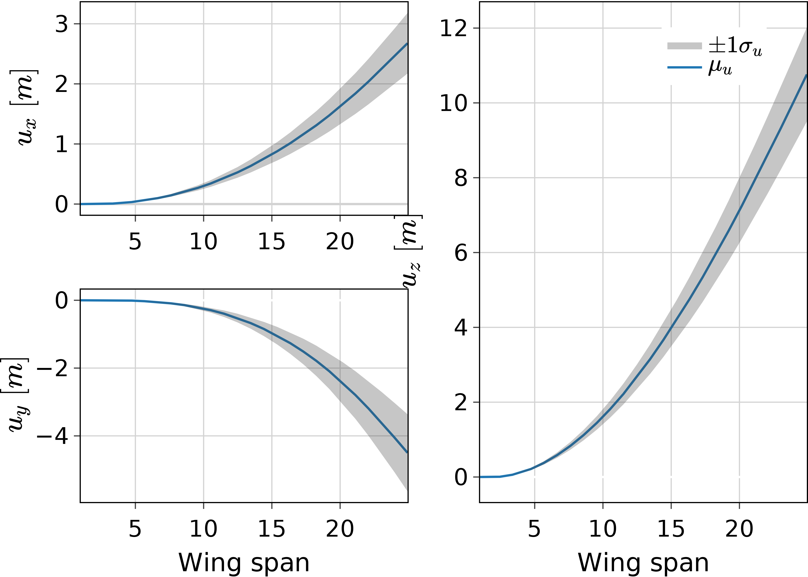
Table 2 shows the times taken for the nonlinear case in both CPU and GPU. The computation of 1600 independent simulations in just over a minute, involving deformations of over 40% the wing semi-span as shown in Fig. 1, highlights the potential of this methodology in more complex uncertainty quantification problems. Note that at this level of nonlinearity, our solvers are already two orders of magnitude faster than commercial solvers such as MSC Nastran even for a single simulation as demonstrated in cite:&CEA2025. The extension to thousands of cases with parallelisation on modern architectures is a key feature of this work with far-reaching applications in aircraft loads analysis.
| Device | Time |
|---|---|
| CPU (single) | 16.8 × 1600 = 26880 |
| CPU (parallel) | 317.4 |
| GPU | 67.6 |
Computing derivatives of expectations¤
# using jac_ediff2 that was computed in memory instead of loading the result which seems to loose accuracy
sol_admc1_t = solution.IntrinsicReader("./ADDiscreteMC1_t")
sol_admc1_fem = solution.IntrinsicReader("./ADDiscreteMC1_fem")
jac_t = sol_admc1_t.data.staticsystem_s1.jac['t']
obj_t = sol_admc1_t.data.staticsystem_s1.objective
jac_fem = sol_admc1_fem.data.staticsystem_s1.jac
semispan = 25.9 # for normalisation
mass = 55615.12 # Kg, see BUG modelgeneration.org
normalisation = mass / 2 * 9.81
mc1_jacpaths = [8, 80, 4e2, 8e2, 4e3] #[8, 80, 4e2, 8e2, 4e3, 8e3, 2e4]
mc1_eps = [1e-1, 1e-2, 1e-3, 1e-4, 1e-5]
sol_admc1_e = dict()
sol_admc1_j = dict()
mc1_jac = list()
mc1_jobj = list()
mc1_eobj = list()
mc1_ejac = list()
jac_pdiff = list()
obj_pdiff = list()
jac_ediff = list()
jac_ediff2 = list()
mc1_ejac2 = jnp.load("./ADDiscreteMC1_te/jac_e.npy")
for i, _ in enumerate(mc1_jacpaths):
sol_admc1_j[i] = solution.IntrinsicReader(f"./ADDiscreteMC1_tjac{i}")
mc1_jobj.append(sol_admc1_j[i].data.staticsystem_s1.objective)
mc1_jac.append(sol_admc1_j[i].data.staticsystem_s1.jac['t'])
for i, _ in enumerate(mc1_jacpaths): # needing to read all to take last one
obj_pdiff.append(jnp.linalg.norm(mc1_jobj[i] - mc1_jobj[-1]) /
jnp.linalg.norm(mc1_jobj[-1]))
jac_pdiff.append(jnp.linalg.norm(mc1_jac[i]-mc1_jac[-1]) /
jnp.linalg.norm(mc1_jac[-1]))
for i, ei in enumerate(mc1_eps):
sol_admc1_e[i] = solution.IntrinsicReader(f"./ADDiscreteMC1_te{i}")
mc1_eobj.append(sol_admc1_e[i].data.staticsystem_s1.objective)
mc1_ejac.append((mc1_eobj[i] - obj_t) / ei)
jac_ediff.append(jnp.linalg.norm(mc1_ejac[i]-jac_t) / jnp.linalg.norm(jac_t))
jac_ediff2.append(jnp.linalg.norm(mc1_ejac2[i]-jac_t) / jnp.linalg.norm(jac_t))
Now we set out to calculate the derivatives of the expectations
previously computed concurrently in Sec. . While the Montecarlo paths are independent of each
other and could therefore be run on different machines, having to do AD
on the output statistics -gathered via collective operations-, forces
the entire chain of operations to be within a single program. This makes
for an interesting and challenging problem to propagate gradients
through concurrent operations. A linear parameter $\alpha$ is introduced
such that the follower forces and torsional moments in Eq.
\eqref{eq:normal_loading} are
$\mu = 10^4 (\frac{\alpha - 1.5}{4-1.5} + 1.5\times\frac{\alpha - 1}{5-1}) $.
The selected output is the expectation of a 3-component vector,
$\bm{r}(\alpha)$ of the wing-tip positions at $\alpha = 4.5$. Fig.
3 shows a comparison between the derivative
$\partial_{\alpha} \bm{r}^a = \partial \mathbb{E}[\bm{r}] / \partial \alpha $
using AD, and finite differences
$ \partial_{\alpha} \bm{r}^{f}= (\bm{r}(\alpha + \epsilon) - \bm{r}(\alpha))/\epsilon $.
The relative error is calculated as
$||\partial_{\alpha} \bm{r}^{a} - \partial_{\alpha} \bm{r}^{f} || / ||\partial_{\alpha} \bm{r}^{a} || $,
using the $l_2 $ norm.
fig, figname = fig_out(name)(plot_jacediff)(mc1_eps, jac_ediff)
figname
fig, figname = plot_jacediff2(name, mc1_eps, mc1_ejac2)
figname
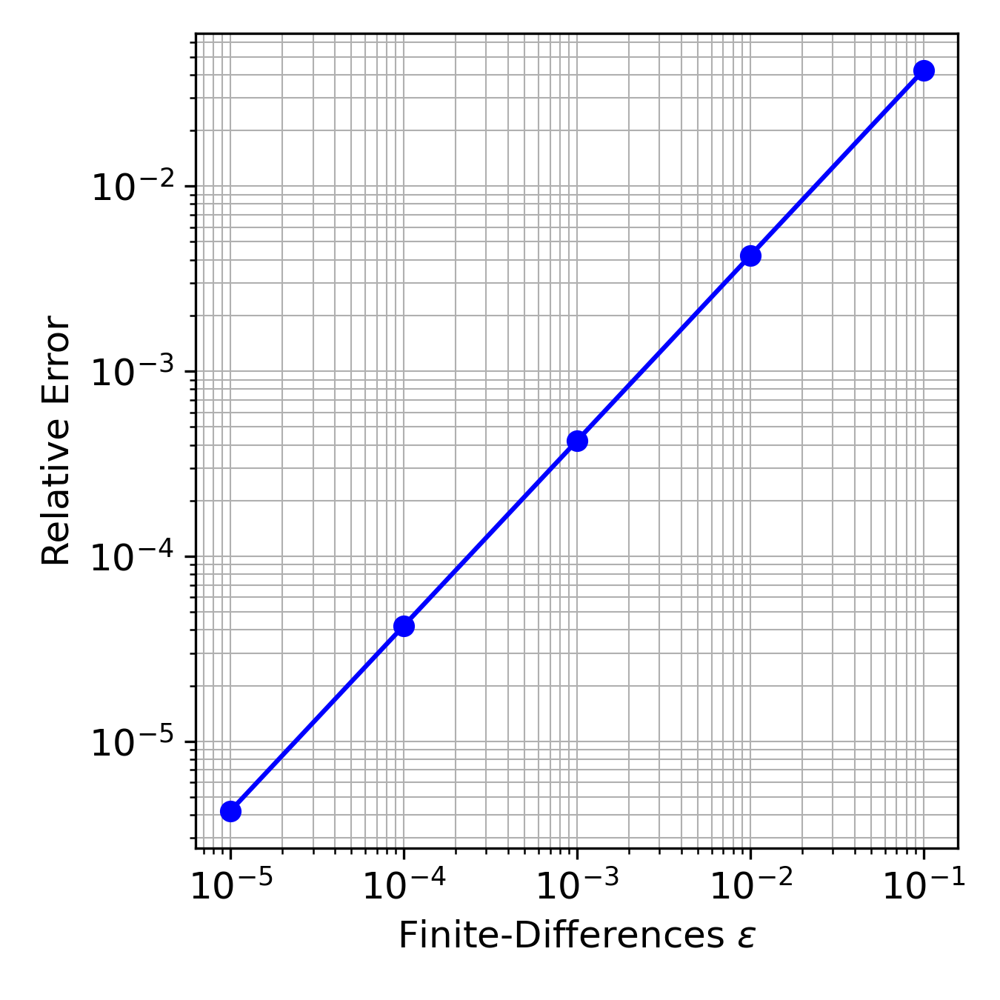
Another convergence metric to investigate is the number of paths in the Montecarlo analysis. We take $[8, 80, 400, 800]$ paths and using the same error metric as for the finite differences calculate its evolution taking 4000 paths as the reference. The plot in 4 shows that the convergence of the value function (expectation of the wing tip position) is faster than its derivative with respect to the loading parameter $\alpha $. This may or not be an issue in optimization studies with expectations as sometimes high accuracy in the gradients is not that important as having a good direction.
fig, figname = fig_out(name)(plot_jacpdiff)(mc1_jacpaths[:-1], obj_pdiff[:-1], jac_pdiff[:-1])
figname
fig, figname = plot_jacpdiff2(name, mc1_jacpaths[:-1], obj_pdiff[:-1], jac_pdiff[:-1])
figname
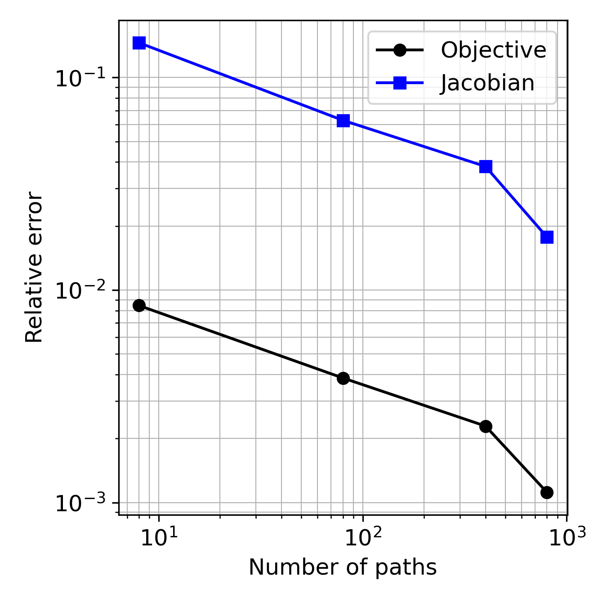
While changing the input loading is good for verification studies, more
realistic examples are solved in Fig. 5 where the
sensitivity of the expectations of wing root loads are calculated with
respect to the FE matrices and eigenvectors (only indexes corresponding
to the right wing nodes are shown in the heat map as the other are 0
because the model is clamped). The derivatives in Fig.
4 were calculated in forward mode, but the condensed
FE matrices of the BUG model contain 99 condensed nodes, each with 6
components, so $(99 \times 6)^2 = 352836 $ entries, to what all the
components in eigenvectors are also added, therefore only backward mode
AD is possible in this case. The sensitivity of the loads with respect
to the mass matrix increase towards the nodes at tip of the wing, which
makes sense if we think a unit mass at the tip will produce much larger
loads than the same unit mass close to the root where the aircraft is
clamped.
The wall-time to calculate the gradient of wing-root loads expectations
with respect to the mass matrix using 800 paths in the Montecarlo
analysis was 48.0 and 297.9 in the GPU and CPU respectively.
m_start = 6*12
m_end = m_start + 6*23#6*35 #m_start + 136 # 6*35
f_index = 2
n_index = 4
jump = 6
shift = 4
Ma_plot = jac_fem['Ma'][0,f_index,0]
xindex = jnp.arange(m_start+n_index-shift, m_end+n_index-shift, jump)
yindex = jnp.arange(m_start+n_index, m_end+n_index, jump)
fig, figname = fig_out(name)(plot_jacfemold)( Ma_plot /normalisation,
xindex,
yindex,
xlabel="i-components",
ylabel="j-components"
)
figname
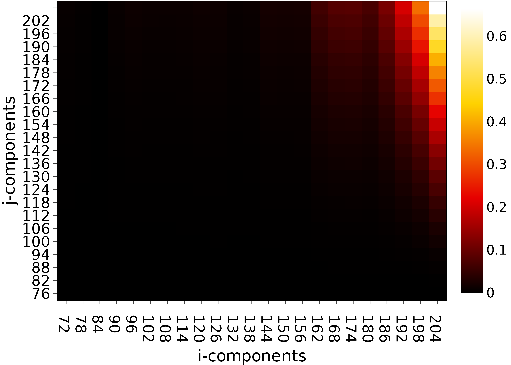
m_start = 6*12
m_end = m_start + 6*23#6*35 #m_start + 136 # 6*35
f_index = 2
n_index = 2
jump = 6
shift = 6
Ma_plot = jac_fem['Ma'][0,f_index,0]
xindex = jnp.arange(m_start+n_index-shift, m_end+n_index-shift, jump)
yindex = jnp.arange(m_start+n_index, m_end+n_index, jump)
fig, figname = fig_out(name)(plot_jacfemold)( Ma_plot /normalisation,
xindex,
yindex,
xlabel="i-components",
ylabel="j-components"
)
figname
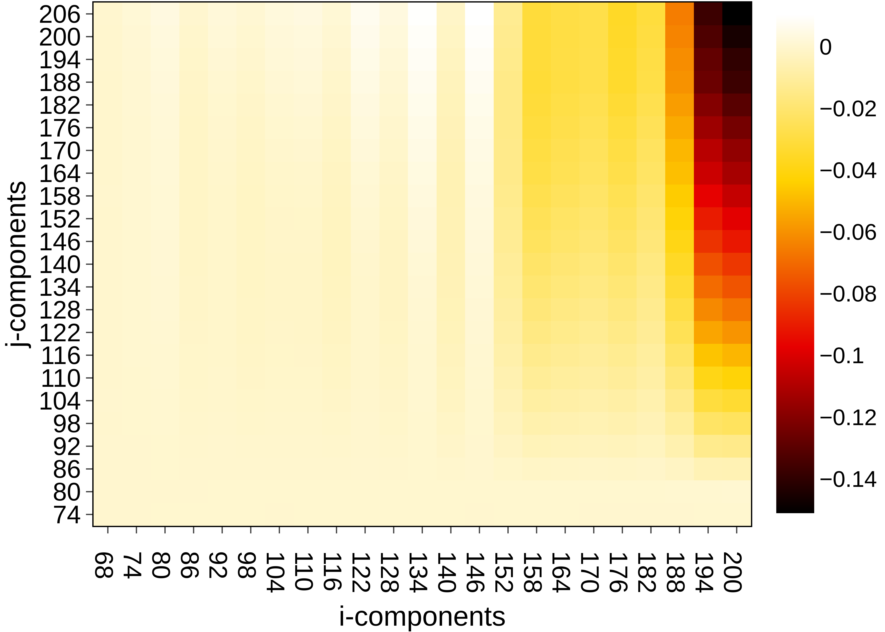
Steady manoeuvre loads¤
sol_manoeuvre = solution.IntrinsicReader("./manoeuvre1Shard")
config_manoeuvre = configuration.Config.from_file("./manoeuvre1Shard/config.yaml")
t = [1/6*1e-2, 1/6, 1/3, 1/2, 2/3, 5/6, 1]
aoa = [6*ti for ti in t]
ra = sol_manoeuvre.data.staticsystem_s1.ra[-1]
component = 2
node = 35
ra_tip0 = config_manoeuvre.fem.X[node]
ra_tip = ra[:, :, node]
ua = ra_tip - ra_tip0
semispan = ra_tip0[1]
uatip = ua[:, component] / semispan * 100
uatip_lin = [uatip[0]/t[0]*ti for ti in t]
We extend the previous analysis to a static aeroelastic case for varying angles of attack that represent a manoeuvre scenario. We test the parallelisation by varying the flow density ($\pm 20 \%$ of the reference density 0.41 Kg/ m$^3$) as well and the flow velocity ($\pm 20 \%$ of the reference velocity 209.6 m/s). 16 different points for both density and velocity make a total number of 256 simulations. The Mach number is fixed at 0.7 corresponding to the reference flow condition values. Fig. fig:BUG_manoeuvre3D illustrates the 3D equilibrium of the airframe at the reference flight conditions.
In Fig. 7 the tip of the wing in Fig. fig:BUG_manoeuvre3D is plotted for various angles-of-attach (AoA), normalized with the wing semi-span ($b= 25.9$) m. Comparison against linear analysis is carried out and the tip position in the nonlinear analysis falls down the linear counter part as expected. The flow velocities and density are selected at the maximum of the load envelope at 251.6 m/s and 0.5 kg/m$^3$ respectively. This highlights the potential need for geometrically nonlinear aeroelastic tools in future aircraft configurations under high loading scenarios.
fig, figname = fig_out(name)(plot_manoeuvretip)(aoa, uatip, uatip_lin)
figname
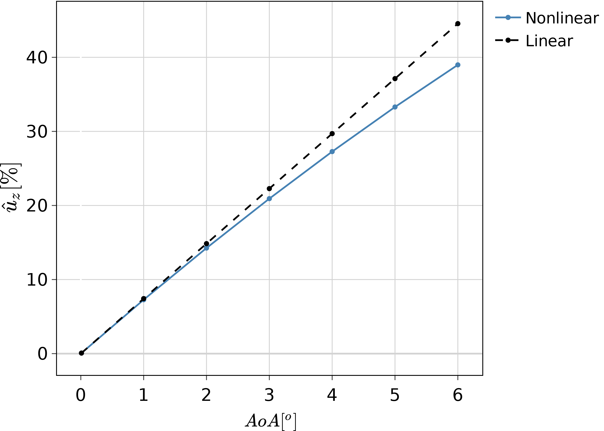
Table 3 shows the computational times to run these simulations, which shows near no overhead in adding a few hundred of static calculations when moving from the single load case in the CPU to the GPU (nearly 8 seconds to 14 seconds, which amounts for 6 seconds cost when adding an extra 255 cases).
| Device | Time |
|---|---|
| CPU (single) | 7.71 × 256 = 1973.8 |
| CPU (parallel) | 52.8 |
| GPU | 14.4 |
Dynamic loads at large scale¤
sol_gust1shard = solution.IntrinsicReader("./gust1_eaoShard")
node = 13
points = sol_gust1shard.data.shards_s1.points
gust_wn = 11 # 11 intensity points
gust_w = points[:gust_wn,3]
gust_l = points[::gust_wn,2]
gust_ln = 11 # 11 gust lenght points
mass = 55615.12 # Kg, see BUG modelgeneration.org
semispan = 25.9
normalisation_force = mass / 2 * 9.81
normalisation_moment = normalisation_force * semispan
x2max = jnp.max(jnp.abs(sol_gust1shard.data.dynamicsystem_s1.X2[:,:, :, node]), axis=1) # points,6
#x2min = jnp.min(sol_gust1shard.data.dynamicsystem_s1.X2[:,:, :, node], axis=1)
x2max_mesh = x2max.reshape((gust_ln, gust_wn,6)) # contour: wn is x, ln is y
#x2min_mesh = x2min.reshape((gust_ln, gust_wn,6))
In this final example we perform a dynamic aeroelastic analysis to study the response of the aircraft to multiple 1-cos gusts for varying length, intensity and the density of the airflow. The mach number is kept constant at 0.7. In the examples above the aircraft was clamped while the aircraft is free here. A Runge-Kutta solver is employed to march in time the equations with a time step of $10^{-3}$ s and the total number of modes used was 100. Note the large size of the aeroelastic ODE system: 2 × 100 nonlinear equations plus 5 × 100 linear equations for the aerodynamic states with 5 poles, plus 4 equations for the quaternion tracking the rigid-body motion, for a combined ODE system of 704 equations. In addition, a total of 512 gusts cases are run concurrently for all possible combinations of 8 gust lengths between 50 and 200 meters, 8 gust intensities between 5 and 25 m/s, and 8 airflow densities between 0.34 and 0.48 Kg/m$^3$. This means that $512 \times 704 = 360448$ equations are being marched in time, in this case for 2 seconds which is enough to capture peak loads. We have verified the concurrent implementation by satisfactory comparing single-point simulations to the same points within the parallel results. Table 4 contains the simulation times of the calculation, which shows one order of magnitude increase in performance when running in parallel in the CPU versus a complete single simulation running sequentially, and another order of magnitude when moving from the CPU to a modern GPU. This exemplifies the power of modern hardware for scientific computation.
| Device | Time |
|---|---|
| CPU (single) | 27.8 × 512 = 14233.6 |
| CPU (parallel) | 922.6 |
| GPU | 38.2 |
In Fig. 8 the 3D reconstructed flight shape of the airframe is depicted for a gust of 150 m length, intensity of 20 m/s and flow density of 0.41 Kg/m$^3$
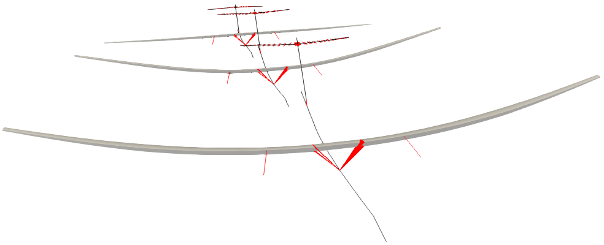
Figs. 9, 10 and 11 show the load diagrams for the maximum shear, torsion and out-of-pane bending at the wing root during the gust encounter, normalized with the aircraft weight and wing semi-span. They reflect the importance of running multiple of these simulations to assess the critical loads: maximum loads occur at different gust lengths of 65, 75, 115 m/s. This analysis would be extended to include various mass cases, flying altitudes etc. in an industrial environment, and it would be straight forward to extend our tools for this.
fig, figname = fig_out(name)(plot_gustshard)(gust_w, gust_l, x2max_mesh / normalisation_force,
component=2)
figname
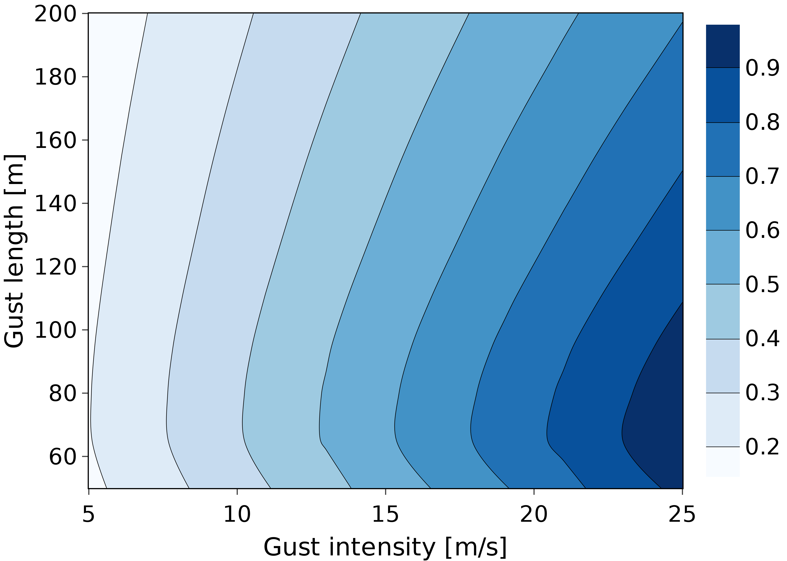
fig, figname = fig_out(name)(plot_gustshard)(gust_w, gust_l, x2max_mesh / normalisation_moment,
component=3)
figname
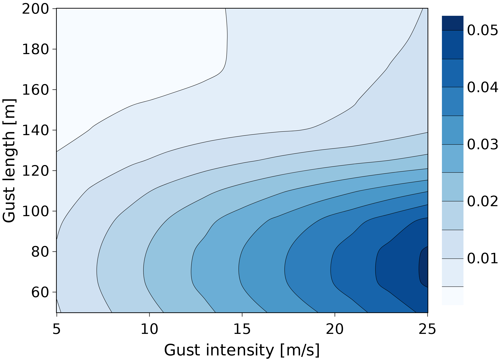
fig, figname = fig_out(name)(plot_gustshard)(gust_w, gust_l, x2max_mesh / normalisation_moment,
component=4)
figname
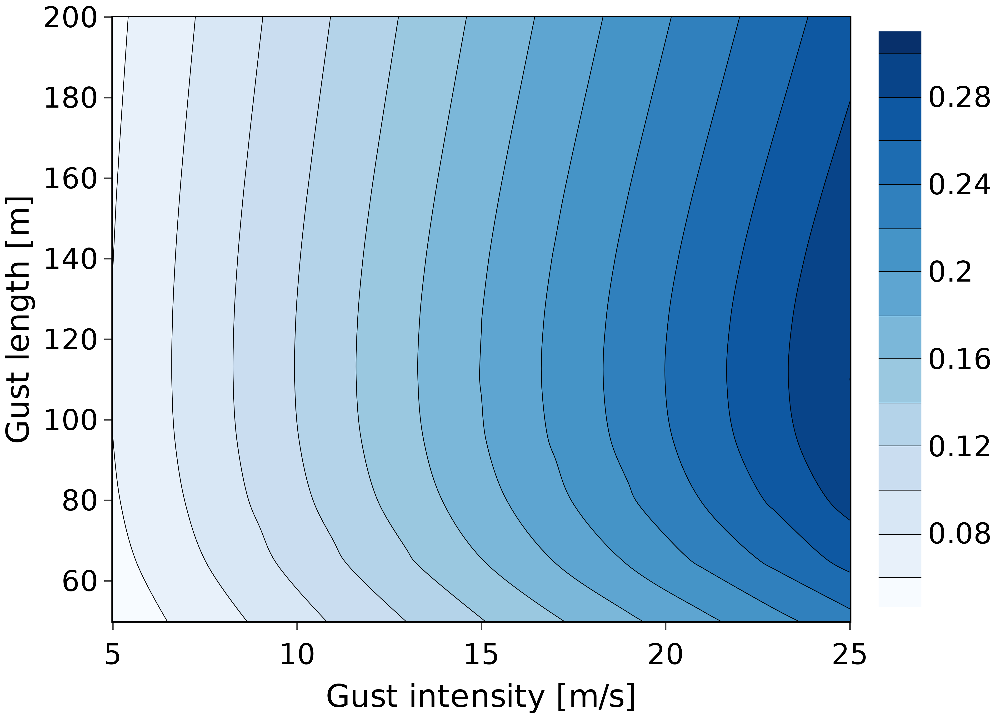
-
Load envelope differentiation
import feniax.intrinsic.objectives as objectives sol_gust1forager = solution.IntrinsicReader("./gustforager") load_jacs = True if load_jacs: jac_rho = jnp.load("./gustforager_epsilonrho/jac_rho.npy") jac_length = jnp.load("./gustforager_epsilonlength/jac_length.npy") jac_intensity = jnp.load("./gustforager_epsilonintensity/jac_intensity.npy") else: # this is not working proprerly with FD, loose of accuracy in saving the data?? sol_gust1forager_val = solution.IntrinsicReader("./gustforager_validation") sol_gust1forager_erho = solution.IntrinsicReader("./gustforager_epsilonrho") sol_gust1forager_elength = solution.IntrinsicReader("./gustforager_epsilonlength") sol_gust1forager_eintensity = solution.IntrinsicReader("./gustforager_epsilonintensity") node = 13 components = [2,3,4] t_range = jnp.arange(len(sol_gust1forager.data.dynamicsystem_s1.t)) points = sol_gust1forager.data.shards_s1.points filtered_map = sol_gust1forager.data.forager_shard2adgust.filtered_map index = list(sol_gust1forager.data.forager_shard2adgust.filtered_indexes)[0] epsilon = 1e-4 jac_rho = (objectives.X2_MAX(sol_gust1forager_erho.data.dynamicsystem_s1.X2, jnp.array([node]), jnp.array(components), t_range) - objectives.X2_MAX(#sol_gust1forager.data.dynamicsystem_s1.X2[index], sol_gust1forager_val.data.dynamicsystem_s1.X2, jnp.array([node]), jnp.array(components), t_range) ) / epsilon epsilon = 1e-4 jac_length = (objectives.X2_MAX(sol_gust1forager_elength.data.dynamicsystem_s1.X2, jnp.array([node]), jnp.array(components), t_range) - objectives.X2_MAX(#sol_gust1forager.data.dynamicsystem_s1.X2[index], sol_gust1forager_val.data.dynamicsystem_s1.X2, jnp.array([node]), jnp.array(components), t_range) ) / epsilon epsilon = 1e-4 jac_intensity = (objectives.X2_MAX(sol_gust1forager_eintensity.data.dynamicsystem_s1.X2, jnp.array([node]), jnp.array(components), t_range) - objectives.X2_MAX(#sol_gust1forager.data.dynamicsystem_s1.X2[index], sol_gust1forager_val.data.dynamicsystem_s1.X2, jnp.array([node]), jnp.array(components), t_range) ) / epsilon jacdiff_rho = jnp.hstack((sol_gust1forager.data.dynamicsystem_scatter0.jac['rho_inf'] - jac_rho) / jac_rho) jacdiff_length = jnp.hstack((sol_gust1forager.data.dynamicsystem_scatter0.jac['length'] - jac_length) / jac_length) jacdiff_intensity = jnp.hstack((sol_gust1forager.data.dynamicsystem_scatter0.jac['intensity'] - jac_intensity) / jac_intensity) normalise = 1 / jnp.array([normalisation_force, normalisation_moment, normalisation_moment]) jac_dict = dict(objective=sol_gust1forager.data.dynamicsystem_scatter0.objective[:,0] * normalise, rho=jnp.hstack(sol_gust1forager.data.dynamicsystem_scatter0.jac['rho_inf']) * normalise, rho_fd=jnp.hstack(jac_rho) * normalise, rho_diff=jacdiff_rho, Length=jnp.hstack(sol_gust1forager.data.dynamicsystem_scatter0.jac['length']) * normalise, Length_fd=jnp.hstack(jac_length) * normalise, Length_diff=jacdiff_length, Intensity=jnp.hstack(sol_gust1forager.data.dynamicsystem_scatter0.jac['intensity']), Intensity_fd=jnp.hstack(jac_intensity) * normalise, Intensity_diff=jacdiff_intensity ) df_jac = pd.DataFrame(jac_dict, index=['Shear', 'Torsion', 'Bending']) #df_jac = df_jac.rename()Since dynamic load envelopes have been constructed, the interest is to be able to obtain derivatives at the critical points. In opposition to the derivatives of expectations where all the operations are needed in the construction of the computational graph, here only a few of the most problematic cases are automatically identifies and its derivatives computed. The metrics being tracked are wing-root shear, torsion and out-of plane bending moments. The parallelisation is set for two gust intensities, two flow densities and 16 gust lengths to cover 1-cos gusts from 50 to 200 m/s with 10 m/s separation between points. Rather than a realistic example, this is set to test the machinery of the forager pattern and verify it can indeed discover critical load cases and automatically compute gradients. The gradient of these critical cases is also calculated with respect to the flow density, gust length and intensity (thus they are not only the parameters for the parallelisation but are also chosen to be the input variables of the sensitivity analysis, though any other input such as FE matrices could have been chosen). By looking at Figs. 9 - 11, we can identify maximum loads at around 65, 75, 115 m/s gust lengths for shear, torsion and bending. Of the 64 cases analyzed, the forager step picked those with higher intensity and flow density as expected, but only 2 gust lengths of 70 m/s for the shear and torsion, and 110 m/s for the out-of-plane bending. The finer the discretization in the input of the parallelization, the closer to the actual maximum, but also the more computations that need to be run. It is therefore a balance whose best compromise is to be found on an actual optimization study. Once those peaks are found, the algorithms triggers the sensitivity analysis, for which we have shown a verification for the 70 m/s gust with maximum density and intensity in Table 5. Finite differences are computed with an $\epsilon = 10^{-4} $ and the absolute relative difference with AD is shown as $ \Delta $ for each of the input parameters ($ \partial \rho_{\inf} $ for the flow density derivative, $ \partial L $ for the gust length, and $ \partial w $ for the gust intensity). The computational wall-time for entire forager loop (concurrent loads, filtering of critical cases and sensitivities on them) was 60.1 and 359.5 seconds on the GPU and CPU respectively.
objective $ \partial \rho_{\inf} $ $ \Delta $ $ \partial L $ $ \Delta $ $ \partial w $ $ \Delta $ Shear 0.897 1.670 $ 1.6 \times 10^{-5} $ -0.0026 $ 4 \times 10^{-6} $ 0.035 $ 1. \times 10^{-7} $ Torsion 0.025 -0.018 $ 4.2 \times 10^{-4} $ -0.0007 $ 3.9 \times 10^{-7} $ 0.0018 $ 1.2 \times 10^{-6} $ Bending 0.300 0.329 $ 2.9 \times 10^{-5} $ 0.00003 $ 1.7 \times 10^{-4} $ 0.012 $ 9.2 \times 10^{-8} $ tabulate(df_jac, headers=df_jac.columns, tablefmt='orgtbl', #columns=["\(\rho_{\inf} \)", "\(\rho_{\inf}\) FD", "\(\Delta \)"] )